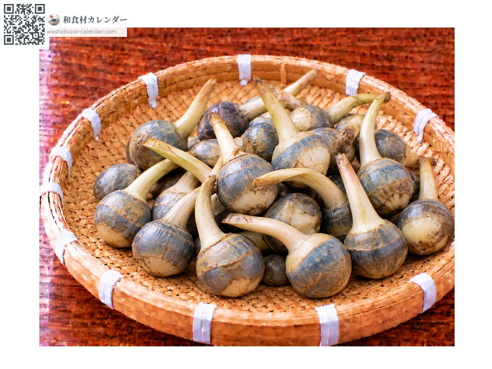
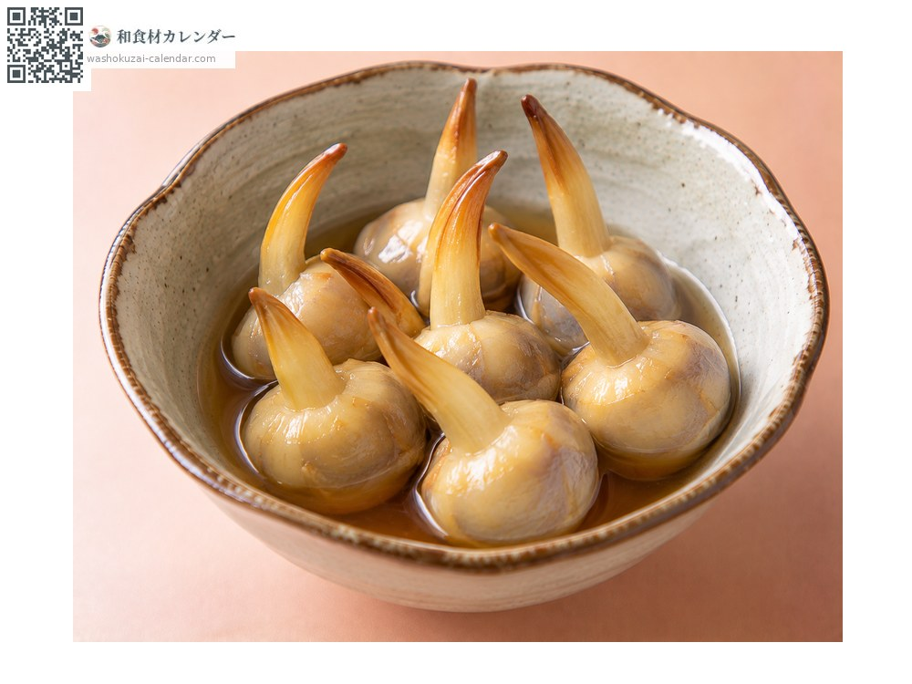
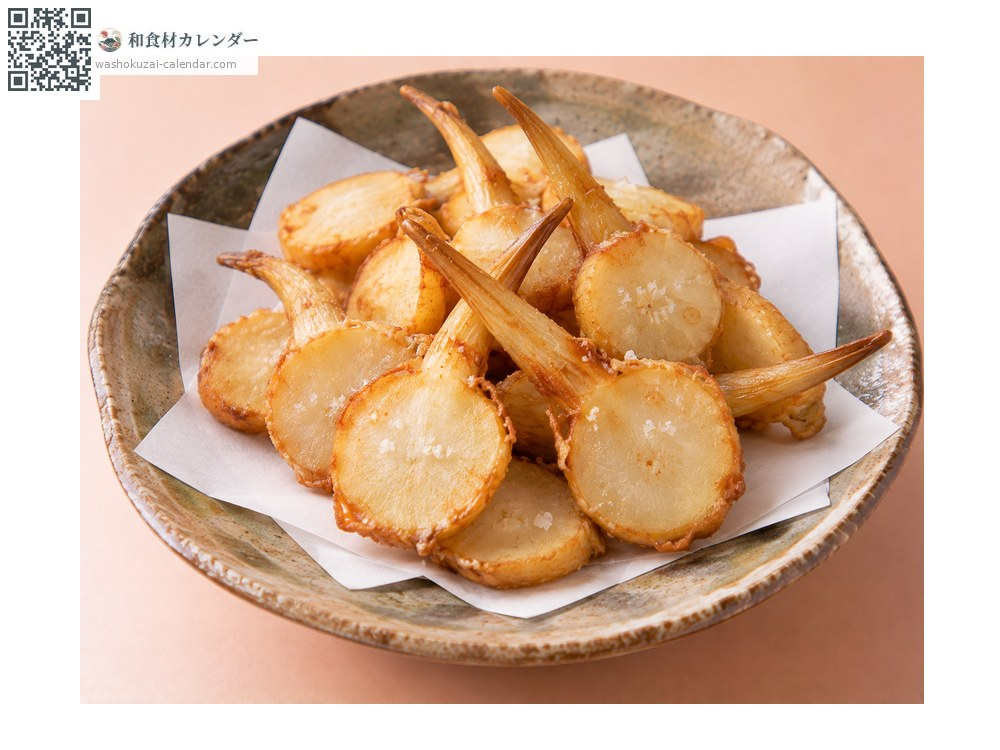
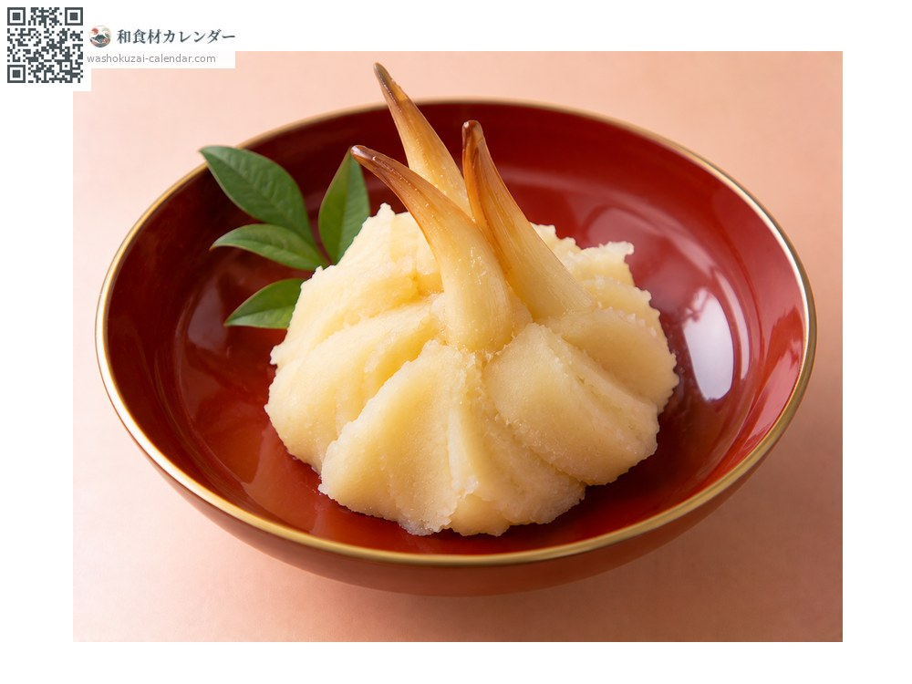
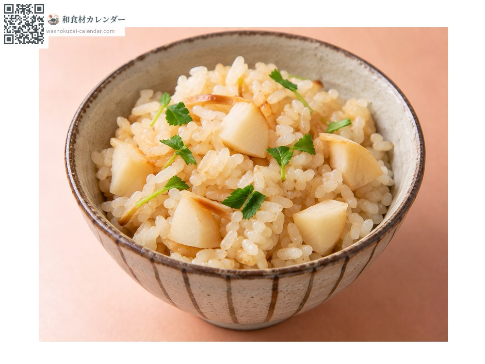

Vegetables
Arrowhead bulb
くわい くわい kuwai
Also known askuwai
At its best in Jan, Dec

When it is at its best
Jan
Feb
Mar
Apr
May
Jun
Jul
Aug
Sep
Oct
Nov
Dec
In seasonAvailable
How to cook

Fukume-ni
Peeled with the shoot left intact and simmered in dashi. An osechi staple.

Deep-fried plain
Sliced thin and fried, floury and fragrant.

Kinton
Sieved and worked with sugar.

Takikomi gohan
Diced and cooked with the rice.
How to choose
An unbroken shoot standing well clear. A round bulb with taut skin.
Storage
Sensitive to drying. Wrap in damp paper and refrigerate, taking care not to snap the shoot.
Main areas
Good to know
The vigorous shoot suggests the Japanese phrase for prospects opening up, which makes it indispensable at New Year. The green variety dominates in Japan, smaller and more bitter than the Chinese kind. Grown in paddies, each bulb is dug from the mud by hand.